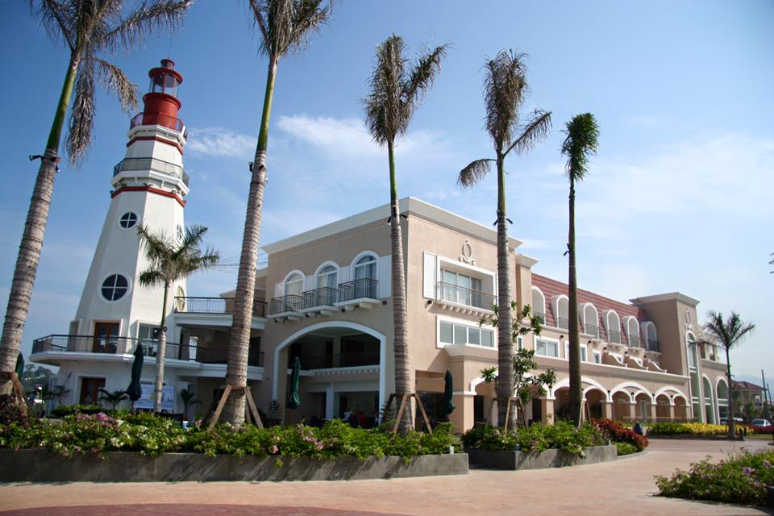
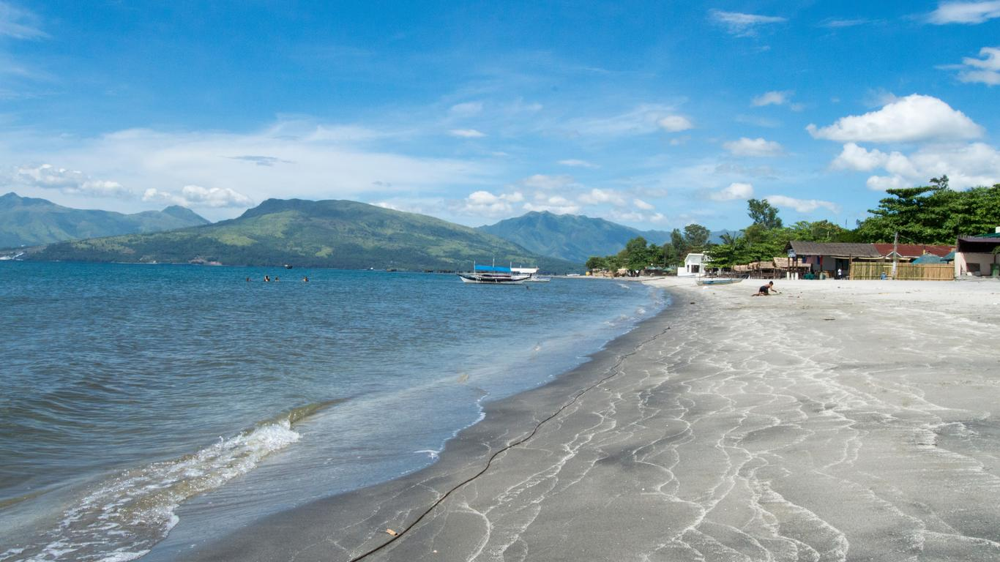
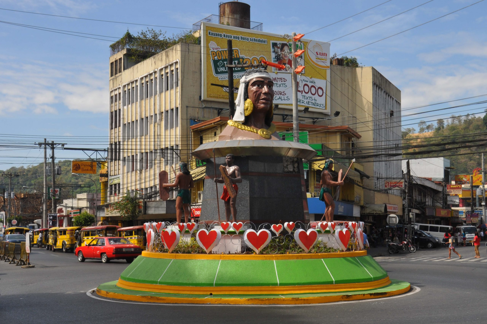
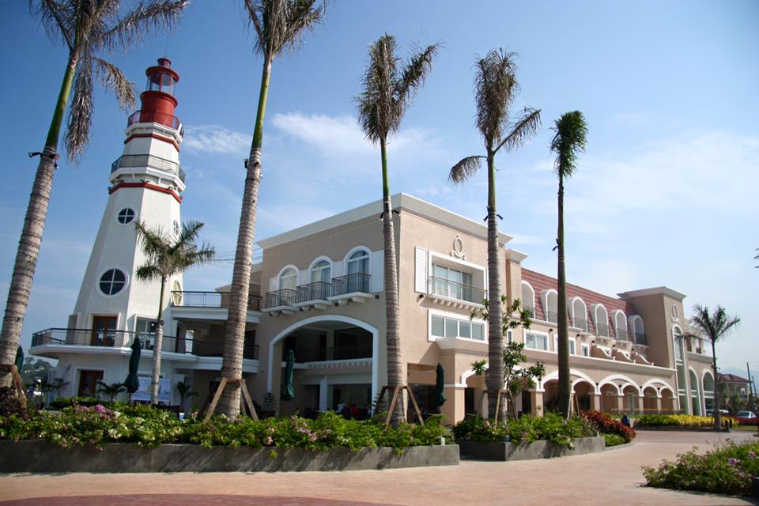
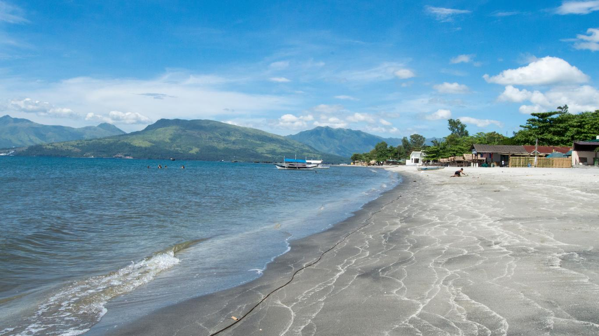
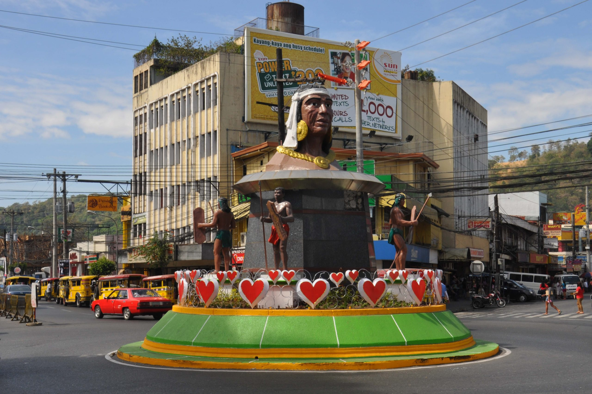

Welcome to Zambales Travel Guide, your gateway to the enchanting province of Zambales! Prepare to embark on a journey of discovery as we unveil the
treasures hidden within this coastal paradise. Picture yourself basking in the warm embrace of the sun on Zambales' sun-kissed beaches, where the gentle waves beckon you to explore their depths. Whether
you seek adventure or relaxation, our carefully selected resorts offer unparalleled luxury and comfort, while cozy hotels provide a charming retreat amidst
the province's natural splendor.
But the allure of Zambales extends far beyond its pristine shores. Delve into the heart of local culture as you immerse yourself in vibrant festivals like
the Subic Bay Festival and the Zambales Mango Festival. These celebrations pulsate with energy and offer a glimpse into the rich tapestry of traditions that
define the region. Dare to venture off the beaten path and uncover hidden coves, where crystal-clear waters shimmer invitingly beneath the sun's rays. Let us be your guide as
you navigate the labyrinth of natural wonders that await, each more breathtaking than the last.
Whether you're seeking serenity amidst nature's embrace or craving the excitement of cultural festivities, Zambales promises an unforgettable experience.
Allow us to unlock the wonders of this enchanting destination and guide you on a journey of discovery, where every moment is etched into the tapestry of your
memories. Welcome to Zambales, where adventure awaits at every turn.